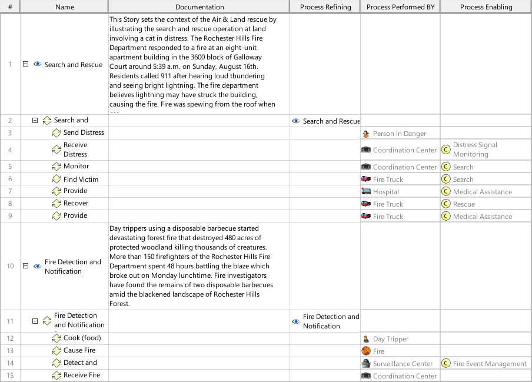
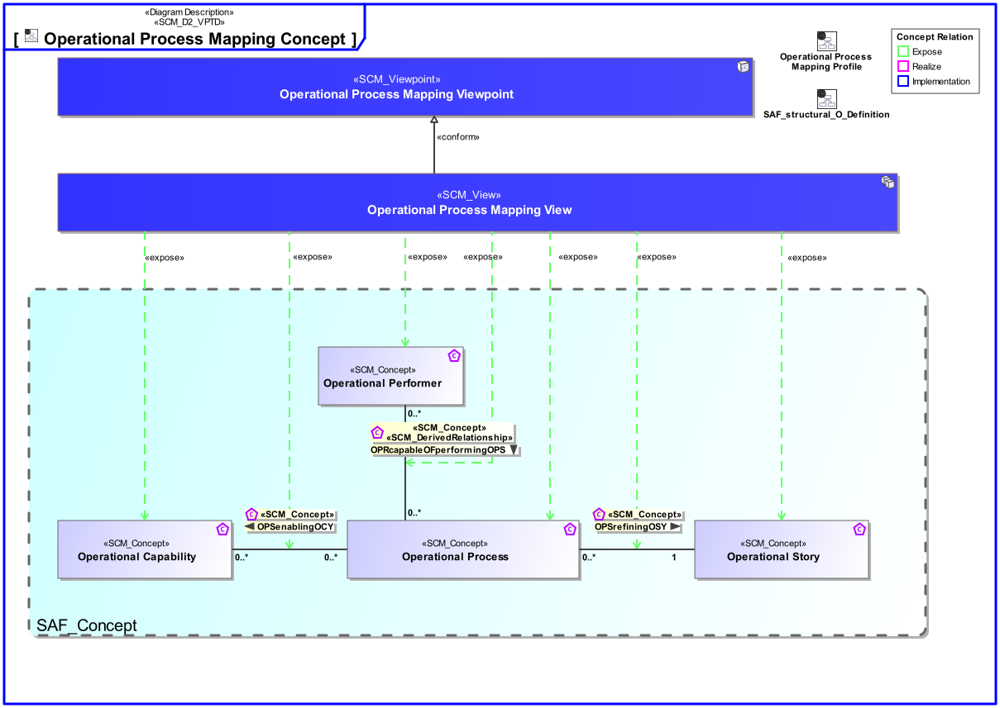
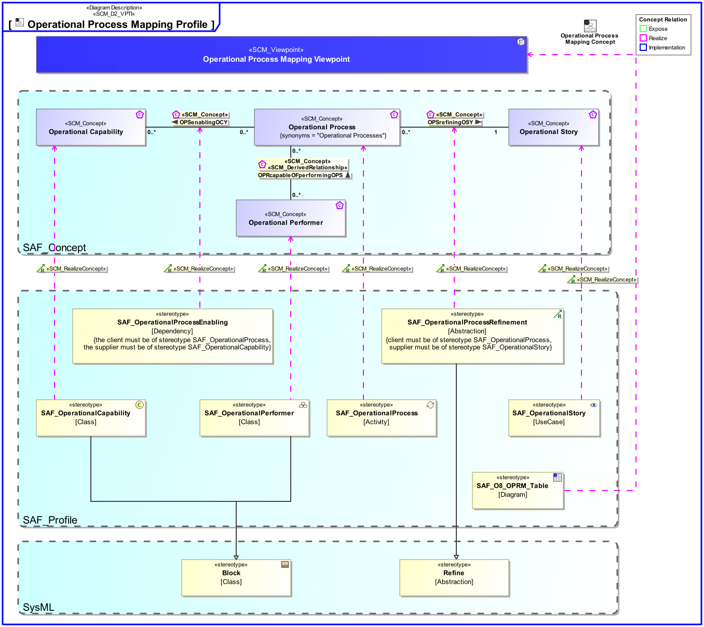

O8_OPRM Operational Process Mapping Viewpoint
| Domain | Aspect | Maturity |
|---|---|---|
| Operational | Traceability & Mapping |

The Operational Process Mapping Viewpoint describes the relationships of Operational Processes. The reasoning for Operational Processes from Operational Stories and their contribution to Capabilities is described. The assignment of Operational Processes to Operational Performers is captured.
The Operational Process Mapping Viewpoint supports the “Business or Mission Analysis Process” activities of the INCOSE SYSTEMS ENGINEERING HANDBOOK 2015 [§ 4.1] and contributes to the definition of operational scenarios.
A tabular format listing the relationships of Operational Process Activities to Operational Capabilities, Operational Stories, and Operational Performers.
The following Stereotypes / Model Elements are used in the Viewpoint:
The Diagram shows the concepts exposed by the viewpoint, and related concepts if necessary.

| Concept | Documentation |
|---|---|
| Operational Capability | A Operational Capability is a high-level description or specification of an organizational unit's ability to execute a specified course of action, to implement a business process or to provide a service. Operational Capabilities typically require people, processes, infrastructure, technology and supporting systems to be implemented. A Operational Capability is an enduring element, its implementation may change over time. A necessary or desired change of a Operational Capability triggers the updated of involved systems or the integration new systems. Aliases: UAF::Capability NAF4::Capability |
| Operational Performer | An Operational Performer is an element of the Operational Context that is capable to perform Operational Process Activities contributing to a specific identified Operational Capability. An Operational Performer may be any kind of organization, person, or even a system playing a role in one or more Operational Contexts. Aliases: UAF::OperationalPerformer |
| Operational Story | The Operational Story represents one or more Operational Use Cases in the Usage Scenario identified by the Operational Context. The Operational Story is described as narrative story-telling. |
| OPRcapableOFperformingOPS | Specifies the fact that an Operational Performer performs an Operational Activity. Traceability from Operational Activities to Operational Performers is derived via assignment of Operational Action to Operational Roles. Aliases: UAF::IsCapableToPerform |
| Operational Process | An Operational Process captures activity-based operational behavior including scenarios, activity actions, and operational exchange flows, e.g., including information, materials, natural resources, etc. Aliases: UAF::Operational Activity NAF::Logical Activity |
| OPSenablingOCY | Specifies the fact that an Operational Process contributes to the provision of one or more Operational Capabilities in the field. Aliases: UAF::MapsToCapability |
| OPSrefiningOSY | Specifies the fact that an Operational Story is refined by one or more Operational Processes. |
The Diagram shows the implementation of exposed concepts.
